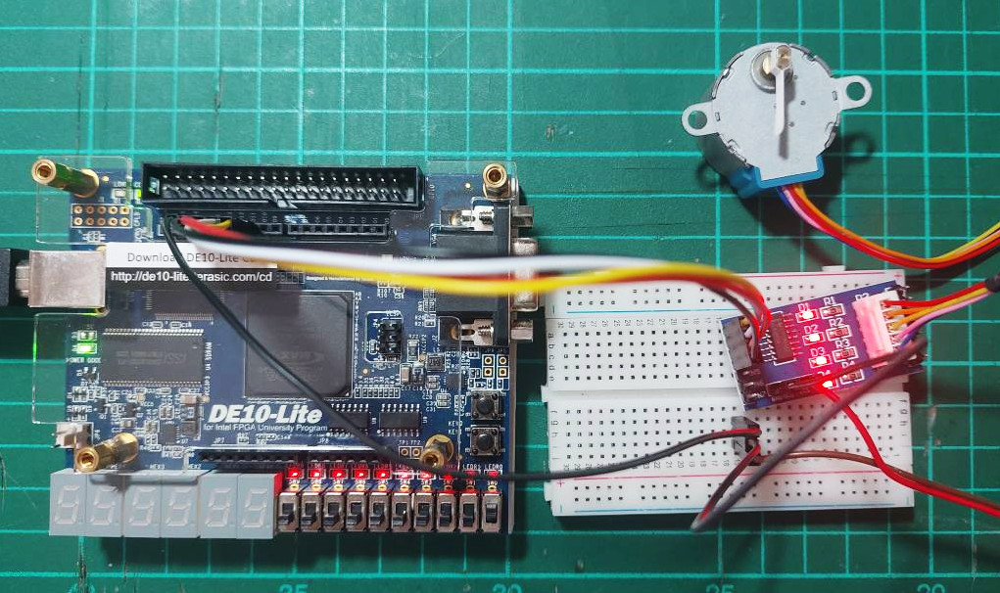

Tutorial: Unipolar 4-Phase Stepper Motor Interfacing#
Stepper Motors#
Stepper motors are designed to move their rotor (the moving part) in fixed angular steps.
Coils inside the motor are used to generate magnetic fields.
A permanent magnet (PM) stepper motor has a rotating part (called a rotor) and contains a permanent magnet which typically exists in the form of a cylindrical or ring-shaped magnet. The interaction between magnet and the electromagnetic fields from the stator coils produce steps of motion.
When electricity flows through these coils in a specific order, a magnetic field is created and attracts the nearest rotor poles, causing the motor rotor to move by one fixed angular increment, known as a step.
There are two main types of stepper motors: bipolar and unipolar.
- In a unipolar stepper motor, there are two center-tapped coils, and it typically has 6 wires (4 wires for the separate coils/phases and 2 common wires for the supply voltage or VCC). ICs such as the ULN2003 can be used to drive unipolar stepper motors.
- In contrast, a bipolar stepper motor has two coils, but no center taps, and 4 wires. Bipolar stepper motors are widely used in 3D printers.
In this tutorial, we will focus on unipolar stepper motors, specifically using the 28BYJ-48 motor with an ULN2003-based driver module.
28BYJ-48 Stepper Motor#
The 28BYJ-48 is a low-cost stepper motor, with a rated voltage of 5V DC.
The motor shaft rotates in 32 steps per revolution (11.25° per step)).
The motor includes a built-in gearbox with a ~64:1 reduction ratio.
This results in 32 × 64 = 2048 steps for a complete one full rotation of
the output shaft.
Figure: 28BYJ-48 stepper motor
The 28BYJ-48 motor has 5 wires:
- 1: Blue wire (coil 4)
- 2: Pink wire (coil 2)
- 3: Yellow wire (coil 3)
- 4: Orange wire (coil 1)
- 5: Red wire for the common pin (VCC)
ULN2003A#
The ULN2003(A) IC is a Darlington transistor array (with TTL and CMOS compatible inputs, 5V logic). It consists of seven NPN Darlington pairs, each capable of sinking up to 500mA at up to 50V. Each NPN pair operates as an inverting buffer and can be used to drive inductive loads such as relays or motors.
Figure: ULN2003 IC
Datasheets
To drive a 4-phase unipolar stepper motor, only the first four channels of the ULN2003 are typically used. There are some ULN2003 driver modules for stepper motors available on the market. These modules include a 5-pin socket for the motor wiring, 4-pin connector for input signals, and on-board LEDs for four-phase indication, making it easier to observe the stepping sequence during the motor operation.
To interface the stepper motor driver module with the FPGA board (3.3V logic), connect only four wires for the input signals (IN1 to IN4, with 3.3V logic level outputs from the FPGA) and GND. Use an external 5V DC power supply for the stepper motor driver module (do not use the 5V supply from the FPGA board!).
Figure: ULN2003A-based 4-phase stepper motor driver module
The module has a 5-pin connector:
- Pin 1: Red wire for the common pin (VCC)
- Pin 2: Orange wire (coil 1)
- Pin 3: Yellow wire (coil 3)
- Pin 4: Pink wire (coil 2)
- Pin 5: Blue wire (coil 4)
Figure: Example schematic of the ULN2003A-based stepper motor driver module.
Stepping Methods#
Different stepping methods affect the operation of a stepper motor such as torque and rotation resolution:
-
Full-stepping (two-coil): Two adjacent coils are energized at once, providing standard step resolution and higher torque. The rotor advances by one full step angle per sequence (before gear reduction).
-
Half-stepping: Half-stepping works by switching between energizing one coil and two coils at a time. This technique provides smoother motion and better resolution, while still maintaining a reasonable amount of torque.
-
Microstepping: With proper modulating coil currents, finer steps between standard positions can be created. This method offers very smooth motion but requires a dedicated micro-stepping driver IC (not supported by ULN2003).
Figure: Full-step vs. Half-step sequences
Step sequencing speed is the rate at which control pulse signals are sent to the motor and determines its rotation speed. Increasing the step rate speeds up the motor rotation, but may cause missed steps or reduced torque if it exceeds the motor's capability.
VHDL Coding Example for FPGA#
This VHDL code implements a unipolar stepper motor controller using an 8-step half-stepping sequence, designed to drive a 4-phase stepper motor via the ULN2003A driver module.
The stepper_motor_demo entity takes a system clock (CLK),
an asynchronous reset (RST_N), and a direction input (DIR), and
outputs a 4-bit control signal (Q) to the motor driver.
-- File: stepper_motor_demo.vhd
LIBRARY IEEE;
USE IEEE.STD_LOGIC_1164.ALL;
USE IEEE.NUMERIC_STD.ALL;
ENTITY stepper_motor_demo IS
GENERIC (
CLK_HZ : INTEGER := 50_000_000 -- Clock frequency in Hz
);
PORT (
CLK : IN STD_LOGIC; -- System clock input
RST_N : IN STD_LOGIC; -- Async reset (active low)
DIR : IN STD_LOGIC; -- Rotation direction (CW vs. CCW)
Q : OUT STD_LOGIC_VECTOR(3 DOWNTO 0) -- Output to ULN2003: IN1..IN4 pins
);
END stepper_motor_demo;
ARCHITECTURE behavioral OF stepper_motor_demo IS
CONSTANT STEP_DELAY : INTEGER := CLK_HZ / 512;
SIGNAL counter : INTEGER RANGE 0 TO STEP_DELAY := 0;
SIGNAL step_index : INTEGER RANGE 0 TO 7 := 0;
SIGNAL Q_reg : STD_LOGIC_VECTOR(3 DOWNTO 0);
BEGIN
PROCESS (CLK, RST_N)
BEGIN
IF RST_N = '0' THEN
counter <= 0;
step_index <= 0;
Q_reg <= "0000";
ELSIF rising_edge(CLK) THEN
IF counter = STEP_DELAY - 1 THEN
counter <= 0;
IF DIR = '1' THEN
IF step_index = 7 THEN
step_index <= 0;
ELSE
step_index <= step_index + 1;
END IF;
ELSE
IF step_index = 0 THEN
step_index <= 7;
ELSE
step_index <= step_index - 1;
END IF;
END IF;
CASE step_index IS
WHEN 0 =>
Q_reg <= "0001";
WHEN 1 =>
Q_reg <= "0011";
WHEN 2 =>
Q_reg <= "0010";
WHEN 3 =>
Q_reg <= "0110";
WHEN 4 =>
Q_reg <= "0100";
WHEN 5 =>
Q_reg <= "1100";
WHEN 6 =>
Q_reg <= "1000";
WHEN 7 =>
Q_reg <= "1001";
WHEN OTHERS =>
Q_reg <= "0000";
step_index <= 0;
END CASE;
ELSE
counter <= counter + 1;
END IF;
END IF;
END PROCESS;
Q <= Q_reg;
END behavioral;
The following Tcl script defines the pin assignments for the DE10-Lite FPGA board.
#============================================================
# FPGA assignments
#============================================================
#set_global_assignment -name FAMILY "MAX 10 FPGA"
#set_global_assignment -name DEVICE 10M50DAF484C7G
#============================================================
# CLOCK
#============================================================
set_instance_assignment -name IO_STANDARD "3.3-V LVTTL" -to CLK
set_location_assignment PIN_P11 -to CLK
#============================================================
# PUSH BUTTONS
#============================================================
set_instance_assignment -name IO_STANDARD "3.3 V SCHMITT TRIGGER" -to RST_N
set_location_assignment PIN_B8 -to RST_N
#============================================================
# Slide Switches
#============================================================
set_instance_assignment -name IO_STANDARD "3.3-V LVTTL" -to DIR
set_location_assignment PIN_C10 -to DIR
#============================================================
# GPIOs
#============================================================
set_instance_assignment -name IO_STANDARD "3.3-V LVTTL" -to Q[3]
set_instance_assignment -name IO_STANDARD "3.3-V LVTTL" -to Q[2]
set_instance_assignment -name IO_STANDARD "3.3-V LVTTL" -to Q[1]
set_instance_assignment -name IO_STANDARD "3.3-V LVTTL" -to Q[0]
set_location_assignment PIN_AB19 -to Q[3]
set_location_assignment PIN_AA19 -to Q[2]
set_location_assignment PIN_Y19 -to Q[1]
set_location_assignment PIN_AB20 -to Q[0]

Figure: DE10-Lite FPGA board driving a 4-phase stepper motor via a ULN2003A driver.
This work is licensed under a Creative Commons Attribution-ShareAlike 4.0 International License.
Created: 2025-06-18 | Last Updated: 2025-06-18